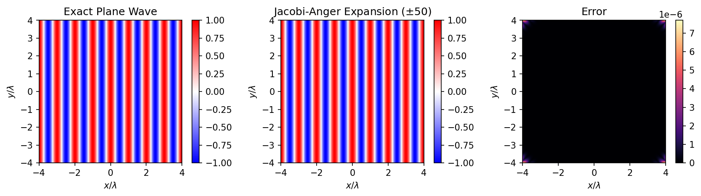
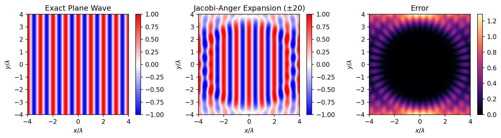
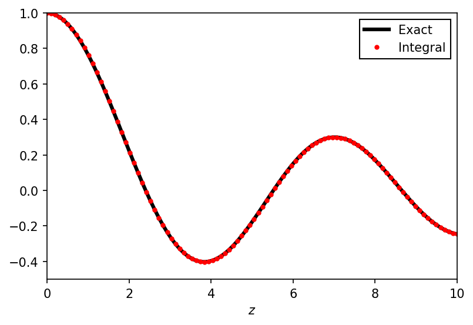

The Jacobi-Anger Expansion
The Jacobi-Anger expansion is a way to decompose a plane wave into angular harmonics and Bessel functions. This decomposition is very useful when solving a wide range of wave scattering problems. In this post, I'll explain why it makes sense to try and write a plane wave in terms of Bessel funcions and show how the Jacobi-Anger expansion can be derived by considering the Fourier series of a plane wave. We'll conclude with some numerical checks that all of the maths makes sense.
Contents
§ 1 Motivation
When solving wave scattering problems, one often has to solve the Helmholtz equation. Written in cartesian coordinates this is \begin{align} \left( \nabla^2 + k^2 \right) \phi = 0, \\ \left( \frac{\partial^2}{\partial x^2} + \frac{\partial^2}{\partial y^2} + k^2 \right) \phi = 0. \end{align} We can see straight away that a solution to this is a plane wave \( \phi (x, y) = e^{ik_x x + ik_y y} \), where \(k_x^2 + k_y^2 = k^2\). However, we may also want to solve wave problems in cylindrical coordinates, this would be a natural choice for the scattering from a cylinder. Writing the Helmholtz equation in cylindrical coordinates, we have \begin{equation} \left( \frac{\partial^2}{\partial r^2} + \frac{1}{r} \frac{\partial}{\partial r} + \frac{1}{r^2} \frac{\partial^2}{\partial \theta^2} + k^2 \right) \phi = 0, \end{equation} where we have assumed we're sat at a particular \(z\) position so the solution has no dependance on this coordinate. We can solve the Helmholtz equation in cylindrical coordinates using the variable separation method (REF), writing the solution as \( \phi (r, \theta) = R(r) \Theta (\theta) \). Plugging this in and rearranging a bit, we have \begin{equation} \frac{r^2}{R} \frac{\partial^2 R}{\partial r^2} + \frac{r}{R} \frac{\partial R}{\partial r} + k^2 r^2 = -\frac{1}{\Theta} \frac{\partial^2 \Theta}{\partial \theta^2} , \end{equation} meaning that the angular part is equal to a constant that we'll call \(n\) \begin{equation} \frac{\partial^2 \Theta}{\partial \theta^2} = -n^2 \Theta. \end{equation} It's fairly easy to see that this differential equation has the solution \begin{equation} \Theta (\theta) = e^{i n \theta} . \end{equation} Plugging this back in, we now have the differential equation for the radial part of the solution \begin{equation} r^2 \frac{\partial^2 R}{\partial r^2} + r \frac{\partial R}{\partial r} + (k^2 r^2 - n^2) R = 0 . \end{equation} We can re-write this more clearly by introducing the unitless variable \(x = kr\) and replacing the \(r\) derivatives with \(x\) derivatives using \(dx = kdr\), which gives us \begin{equation} x^2 \frac{\partial^2 R}{\partial x^2} + x \frac{\partial R}{\partial x} + (x^2 - n^2) R = 0 . \end{equation} This may still look quite hard to solve, but it's not! In fact, this is just the Bessel differential equation \begin{equation} x^2 \frac{d^2y}{dx^2} + x \frac{dy}{dx} + (x^2 - \alpha^2) y = 0 \end{equation} which is solved by the Bessel functions \(J_n (x) = J_n (kr)\). Plutting the angular and radial parts together gives us the full solution to the Helmholtz equation in polar coordinates as \begin{equation} \phi (r, \theta) = \sum_{n = -\infty}^\infty J_n (kr) e^{i n \theta} , \end{equation} whick looks rather different to the plane wave solution we wrote down in cartesian coordinates. This should be slightly worrying, as physics does not depend upon which coordinate system you choose. Fortunately, the Jacobi-Anger expansion gives us a way of writing a plane wave in terms of Bessel functions and angular harmonics, reconciling our solutions in polar and cartesian coordinates.
§ 2 Fourier Series
We can derive the Jacobi-Anger expansion by considering the Fourier series of a plane wave. The Fourier series of some function of is just a decomposition of that function into the angular harmonics \begin{equation} f(\theta) = \sum_{l=-\infty}^{\infty} a_n e^{in\theta} , \end{equation} with the complex coefficients \(a_n\) giving the amplitude of a particular harmonic. These coefficients are found by integrating the function against the harmonics \begin{equation} a_n = \frac{1}{2\pi} \int_{-\pi}^\pi d\theta e^{-in\theta} f(\theta) . \end{equation} Let's apply this to our plane wave solution and see what we find. Our plane wave solution was \begin{equation} e^{ik_x x + ik_y y} = e^{i \boldsymbol{k} \cdot \boldsymbol{r}} = e^{i k r \cos \theta} = e^{i k r \sin (\theta + \pi/2)}. \end{equation} Let us write \(\phi = \theta +\pi/2\) and find the Fourier series of \(e^{i k r \sin \phi}\) in terms of \(\phi\). The coefficients of the expansion are \begin{align} a_n &= \frac{1}{2\pi} \int_{-\pi}^\pi d\phi e^{-in\phi} e^{i k r \sin \phi} \\ &= \frac{1}{2\pi} \int_{-\pi}^\pi d\phi e^{i ( k r \sin \phi - n \phi)} \\ &= \frac{1}{2\pi} \int_{-\pi}^\pi d\phi \left\{ \cos \left[ k r \sin \phi - n \phi \right] + i \sin \left[ k r \sin \phi - n \phi \right] \right\} \end{align} The imaginary part is an odd function evaluated over symmetric limits so vanishes and the real part leaves us with \begin{equation} a_n = \frac{1}{2\pi} \int_{-\pi}^\pi d\phi \cos \left[ k r \sin \phi - n \phi \right] \end{equation} It doesn't look like we're much closer to convert a plane wave into Bessel functions, but in fact we're done! This expression is the integral representation of the Bessel function \(J_n (kr)\). So it turns out that that coefficients in the Fourier expansion of a plane wave are the Bessel functions \begin{equation} e^{ikr \sin \phi} = \sum_{n=-\infty}^\infty J_n (kr) e^{i n \phi} . \end{equation} All we need to do now to show that our plane wave solution and our Bessel function solutions for the Helmholtz equation are the same is to substitute \(\phi = \theta + \pi/2\), giving us \begin{align} e^{ikr \sin (\theta+\pi/2)} &= \sum_{n=-\infty}^\infty J_n (kr) e^{i n (\theta + \pi/2)} \\ e^{ikr \cos \theta} &= \sum_{n=-\infty}^\infty J_n (kr) e^{i n\theta } e^{i n \pi/2} \\ e^{ikr \cos \theta} &= \sum_{n=-\infty}^\infty i^n J_n (kr) e^{i n\theta } \end{align} This is the Jacobi-Anger expansion, converting a plane wave into a sum of Bessel functions.
§ 3 The Jacobi-Anger Expansion
In the previous section, we derived the Jacobi-Anger expansion \begin{equation} e^{iz \cos \theta} = \sum_{n=-\infty}^\infty i^n J_n (z) e^{i n\theta } , \end{equation} and in this section all we'll do is show that there's another way to write it then show how it behaves under angular integration. Both of these things come in handy when solving wave scattering problems. To re-write the expansion in a slightly different way, we split the sum into parts from \( -\infty \) to -1, the zero term and then from 1 to \( \infty \) \begin{equation} e^{iz \cos \theta} = \sum_{n=-\infty}^{-1} i^n J_n (z) e^{i n \theta} + J_0 (z) + \sum_{n=1}^{\infty} i^n J_n (z) e^{i n \theta} . \end{equation} In the first term we re-map the index \( n \rightarrow -n\) and note that \( J_{-n} (z) = (-1)^n J_n (z) \) and that \( i^{-n} (-1)^n = i^n \). This lets us write \begin{align} e^{iz \cos \theta} &= \sum_{n=1}^{\infty} i^{-n} J_{-n} (z) e^{-i n \theta} + J_0 (z) + \sum_{n=1}^{\infty} i^n J_n (z) e^{i n \theta} \\ &= \sum_{n=1}^{\infty} i^{-n} (-1)^n J_{n} (z) e^{-i n \theta} + J_0 (z) + \sum_{n=1}^{\infty} i^n J_n (z) e^{i n \theta} \\ &= \sum_{n=1}^{\infty} i^n J_{n} (z) e^{-i n \theta} + J_0 (z) + \sum_{n=1}^{\infty} i^n J_n (z) e^{i n \theta} \\ &= J_0 (z) + \sum_{n=1}^\infty i^n J_n (z) \left( e^{in\theta} + e^{-in\theta} \right) \\ &= J_0 (z) + 2 \sum_{n=1}^\infty i^n J_n (z) \cos (n\theta) \\ \end{align} This second form of the Jacobi-Anger expansion is equivalent to the first but can be easier to use when solving problems. Now, integrating this over angles we see that \begin{align} \int_0^{2\pi} d\theta \left[ J_0 (z) + 2 \sum_{n=1}^\infty i^n J_n (z) \cos (n\theta) \right] &= 2 \pi J_0 (z) + 2 \sum_{n=1}^\infty i^n J_n (z) \int_0^{2\pi} d\theta \cos (n\theta) \\ &= 2 \pi J_0 (z) \end{align} since \( \int_0^{2\pi} \cos (n\theta) d\theta \) vanishes for all integer and half integer \(n\). This property comes in handy when evaluating 2D Fourier integrals.
§ 4 Numerical Checks
To check that our maths has made sense, we can plot this out and see how well everything fits together. We'll start by checking the Jacobi-Anger expansion itself \begin{equation} e^{ikr \cos \theta} = \sum_{n=-\infty}^\infty i^n J_n (kr) e^{i n\theta } . \end{equation} We can do this by noticing that \(r \cos \theta = x\) and writing a couple of Python functions to compare the two sides of the equality
import numpy as np
import scipy.special as sps
def plane_wave(x,y):
r = np.sqrt(x**2 + y**2)
return np.exp(1j*k*x)
def expansion(x,y):
Nmax = 50
approx = np.zeros_like(x, dtype=complex)
z = x+1j*y
r = np.abs(z)
theta = np.angle(z)
for n in np.arange(-Nmax, Nmax+1):
approx += (1j)**n * sps.jv(n, k*r) * np.exp(1j*n*theta)
return approx
where Nmax is the limit of the sum since we can't actually go to infinity.
Plotting these things out, we see that everything looks good.

Then, by decreasing Nmax, making the approximation worse we see that the error grows.

Next, we'll double check that
\begin{align}
\frac{1}{2 \pi} \int_0^{2\pi} d\theta e^{iz\cos\theta} &= 2 \pi J_0 (z).
\end{align}
We can do this by numerically evaluating the integral using the quad method from scipy.
import scipy.integrate as spi
integrand_r = lambda theta, z: np.real( np.exp(1j*z*np.cos(theta)) )
integrand_i = lambda theta, z: np.imag( np.exp(1j*z*np.cos(theta)) )
bessel0 = lambda z: 1.0/(2.0*np.pi)*( spi.quad(integrand_r, 0.0, 2.0*np.pi, args=(z))[0] + 1j*spi.quad(integrand_i, 0.0, 2.0*np.pi, args=(z))[0] )
We need to treat the real and imaginary parts separately and treat \(z\) as a parameter of the integral, making things look a bit messy.
The result of the integral can then be plotted against what we expect: \(J_0(z)\).
This is found in scipy's special library as scipy.special.jv(0, z).
Plotting the integral for several values of \(z\) should give us the zeroth order Bessel function.

From the plot, we can see that this equality also seems to hold up.
All of the code used to generate these plots can be downloaded from the link at the top of the page.
References/Further Reading
-
Online library of mathemaical functions
Most of the identities in this article can be found here. -
P. Morse and H. Feshback "Methods of Theoretical Physics"
A lot of the maths that I've skimmed over is explained in detail here. There are sections on variable separation of the Helmholtz equation, as well as Bessel decompositions of plane waves and using these to solve problems. For example, when we were solving the Helmholtz equation in polar coordinates I neglected all of the constants of integration and only gave the \(J_n (kr)\) solution for Bessel's differential equation, ignoring other solutions. -
Del in cylindrical and spherical coordinates
Wikipedia reference for the laplacian in cylindrical coordinates.